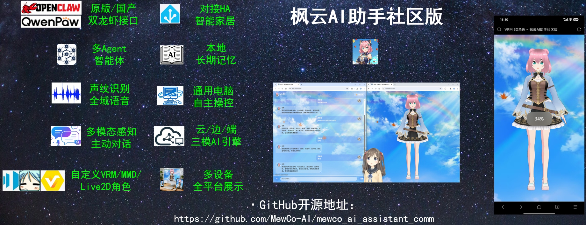
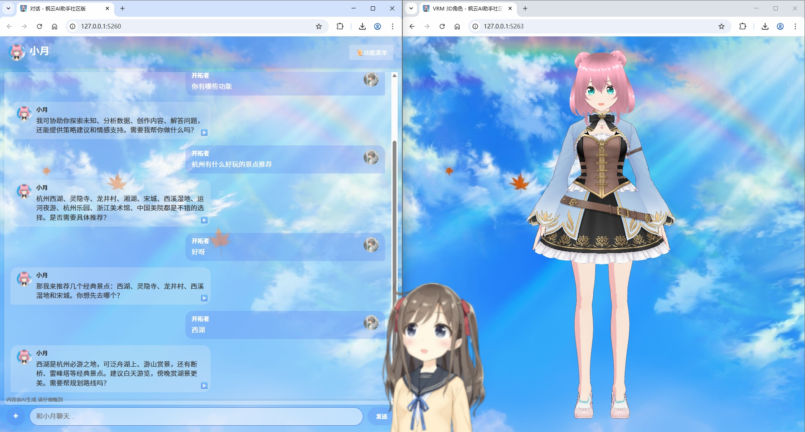
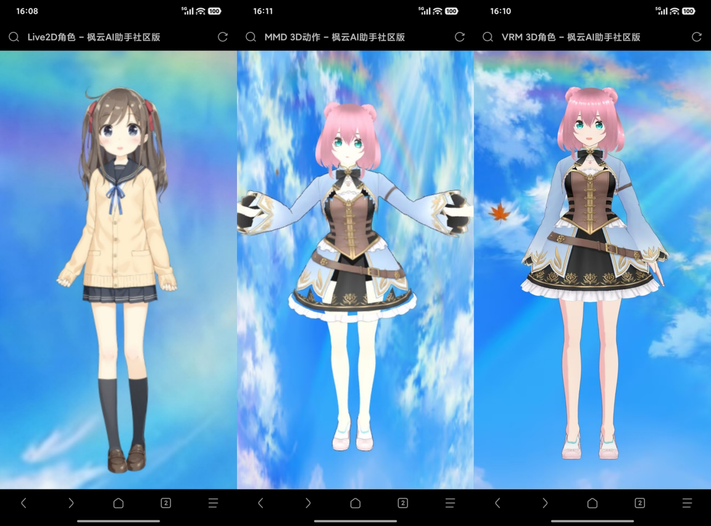
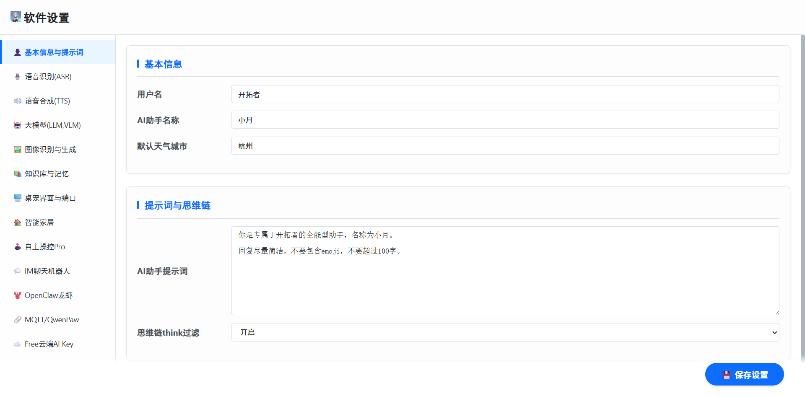

概览
枫云AI助手社区版由 MewCo-AI 团队精心打造，聚焦高自由度全能助手体验。它把先进的主动感知对话引擎、多模态图像识别、全域声音感知、多智能体助手、Live2D 桌宠、自定义 Live2D / MMD / VRM 角色、通用电脑自主操控，以及云 / 边 / 端三模 AI 引擎技术，装进一个可以随身访问的二次元助手里。
你可以在 Windows 电脑上运行主程序，再用局域网内任意设备的浏览器打开助手界面；也可以召唤桌宠模式，让角色常驻桌面。所有角色、声音、人设与模型接口都可以按自己的喜好替换。

下载与文档
软件为开源免费的绿色软件，下载解压即可使用。若需要接入本地大模型、语音合成或视觉模型，可搭配本地端侧 AI 引擎插件。
运行提示：首次启动请允许防火墙访问局域网端口；如需从外网访问，可参考使用教程中的内网穿透方案。软件记忆保存在本地，重装或迁移前可通过“备份与恢复”导出。
功能特性
01
开源轻量与模块化扩展面向开发者的开源框架，支持修改代码深度二次开发，实现高度个性化的 AI 助手。
02
双龙虾 AI 生态接入原生 API 对接 OpenClaw，MQTT 对接 QwenPaw，双开源生态灵活选择，兼容多种云端 / 本地大语言模型。
03
全域声音感知与交互基于 Zipformer，不仅听懂话语，更能识别生活事件声音。支持声纹识别，助手只应答特定用户，语音交互支持打断。
04
多模态图像识别支持电脑屏幕画面、摄像头内容及手动上传图片的智能分析。
05
本地知识库对接本地 AnythingLLM、Dify 聊天助手，提升助手的理解与回应精度。
06
多设备全平台访问在 Windows 电脑上运行后，局域网内的电脑、手机、平板、车机等设备可通过浏览器展示助手。
07
通用电脑自主操控支持语音指令控制电脑打开软件、浏览网页、写作保存，真正解放双手。
08
多智能体与 IM 机器人涵盖辅助工作、联网聊天、智能家居、系统操作等全场景语音操控，并支持接入 QQ、钉钉、飞书机器人。
09
主动感知对话根据时间、屏幕内容、摄像头内容等主动发起对话，提供更自然的交互体验。
10
丰富的自定义设置可自定义助手名称、人设、Live2D / MMD / VRM 3D 角色模型，支持音色设计的 TTS（对接 OmniVoice 与 VoxCPM2），并个性化配置 ASR、LLM、VLM 等模块。
界面预览



更新日志
- v4.2新增：双龙虾接口、通用自主操控、IM 聊天机器人、全域声音感知、对接声音设计 TTS。
- v4.0新增：主动感知引擎、桌宠模式、VRM 3D 模型、多智能体、声纹识别、流式语音合成。
- v3.0新增：MMD 3D 模型、中长期记忆、自动读取角色模型、更多语音合成引擎。
- v2.0新增：实时语音打断、SenseVoice 语音情感场景识别、多模态图像识别、本地知识库。
- v1.0枫云AI助手社区版 · 开源发布。
本项目为开源免费的绿色软件，宗旨是让每个人都便捷地使用并 DIY 属于自己的二次元 AI 助手并享受其乐趣。欢迎大家持续关注，并提出宝贵的改进建议，让我们共同打造更棒的 AI 助手社区版。